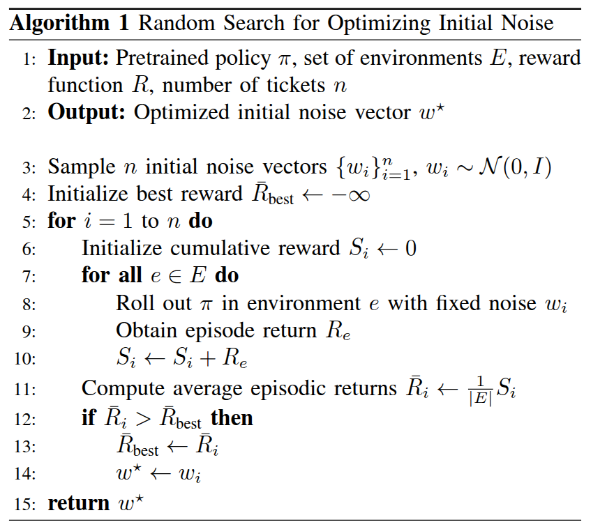
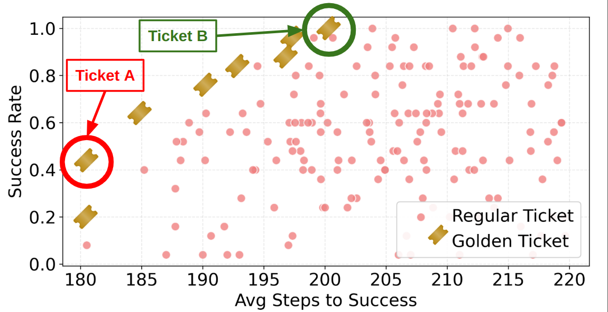

🎫 You've Got a Golden Ticket: Improving Generative Robot Policies With A Single Noise Vector
Abstract
What happens when a pretrained generative robot policy is provided a constant initial noise as input, rather than repeatedly sampling it from a Gaussian? We demonstrate that the performance of a pretrained, frozen diffusion or flow matching policy can be improved with respect to a downstream reward by swapping the sampling of initial noise from the prior distribution (typically isotropic Gaussian) with a well-chosen, constant initial noise input---a golden ticket. We propose a search method to find golden tickets using Monte-Carlo policy evaluation that keeps the pretrained policy frozen, does not train any new networks, and is applicable to all diffusion/flow matching policies (and therefore many VLAs). Our approach to policy improvement makes no assumptions beyond being able to inject initial noise into the policy and calculate (sparse) task rewards of episode rollouts, making it deployable with no additional infrastructure or models. Our method improves the performance of policies in 38 out of 43 tasks across simulated and real-world robot manipulation benchmarks, with relative improvements in success rate by up to 58% for some simulated tasks, and 60% within 50 search episodes for real-world tasks. We also show unique benefits of golden tickets for multi-task settings: the diversity of behaviors from different tickets naturally defines a Pareto frontier for balancing different objectives (e.g., speed, success rates); in VLAs, we find that a golden ticket optimized for one task can also boost performance in other related tasks. We release a codebase with pretrained policies and golden tickets for simulation benchmarks using VLAs, diffusion policies, and flow matching policies.
Methodology
The lottery ticket hypothesis for robot control proposes that the performance of a pretrained, frozen diffusion or flow matching policy can be improved by replacing the sampling of initial noise from a prior distribution with a well-chosen, constant initial noise input, called a golden ticket.

Given a pretrained policy and a reward function and an environment for a new downstream task, we pose finding golden tickets as a search problem, where candidate initial noise vectors, which we call lottery tickets, are optimized to find the ticket that maximizes cumulative discounted expected rewards on the downstream task.
Our proposed method has several unique benefits:
- The pretrained policy weights are kept frozen.
- There is no additional network that is trained.
- It can be applied to any diffusion or flow matching framework without additional training or test-time assumptions.

Hardware Experiments
We use Franka hardware to conduct all real-world experiments. We perform three tasks: picking a banana, pushing a cup, and picking a cube. The first two tasks (banana and cup) use pointcloud-based diffusion policies, whereas for the cup picking task we used an RGB-based diffusion policy. For each task (and corresponding base policy), we first evaluate the base policy using Gaussian noise (🎲). Then, we search for golden tickets (🎫), with the most number of rollouts being 150 episodes, and report the performance of the best performing ticket.🍌 Banana picking task
For the banana picking pointcloud policy, we initially evaluate the base policy at a single location 10 times, where it successfully picks the banana 30% of the time. After searching for 10 tickets in the same location for 5 episodes each (50 episode rollouts total), we found a ticket that performed 100% in that location. We then evaluated that golden ticket and the base policy at 4 other locations on the table, 10 episodes each.🎲 Gaussian Noise
🎫 Golden Ticket
🥤 Push Cup
The goal of the push cup task is to push a cup to touch the red x on the table. For the cup pushing pointcloud policy, we evaluated the base policy 10 times and observed an average success rate of 40%. We searched for 10 tickets, with 5 rollouts, and found a ticket that achieved 100% success rate. When evaluated an additional 10 times, we found that it continued to achieve a 100% success rate. This constitutes our largest improvements on hardware, where the average success rate was increased by 60%.🎲 Gaussian Noise
🎫 Golden Ticket
📦 Pick cube
When using standard Gaussian noise, our block-picking policy successfully picks up the cube 80% of the time (40 out of 50). After searching for 6 tickets, each with 25 episode rollouts, 150 episodes in total, we find a golden ticket (Ticket 5) that succeeded 25 out of 25 times, and also a ticket (Ticket 6) that succeeded only 1 out of 25 times). When we then evaluate those two tickets an additional 50 times, Ticket 5 successfully picked the cube 98% of the time (49 out of 50), where Ticket 6 only succeeded 2 out of 50 times. We therefore show we can drive success rate from 80% to 98%, an 18% increase, using just 150 search episodes, or conversely steer the policy to miss with extreme reliability.🎲 Gaussian Noise (40 out of 50, 80% S.R)
🎫 Golden Ticket 5 (49 out of 50, 98% S.R)
🎫 Golden Ticket 6 (2 out of 50, 4% S.R)
Pareto Frontier for Multiple Reward Functions
We use the frankasim MuJoCo environment to train a single-arm Franka robot to pick a cube, which randomly spawns in a 0.5 square meter region in front of the robot. We train a flow matching policy that takes as input the low-dimensional state of the cube and robot.

Citation
@article{patil2026goldenticket,
title={You've Got a Golden Ticket: Improving Generative Robot Policies With A Single Noise Vector},
author={Patil, Omkar and Biza, Ondrej and Weng, Thomas and Schmeckpeper, Karl and Thomason, Wil and Zhang, Xiaohan and Walters, Robin and Gopalan, Nakul and Castro, Sebastian and Rosen, Eric},
journal={},
year={2026}
}